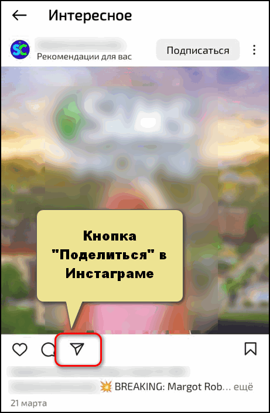
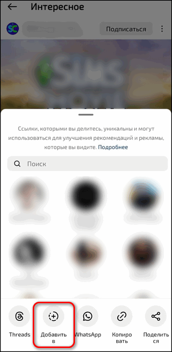
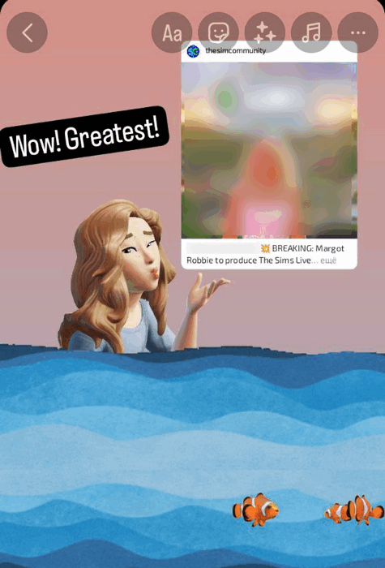
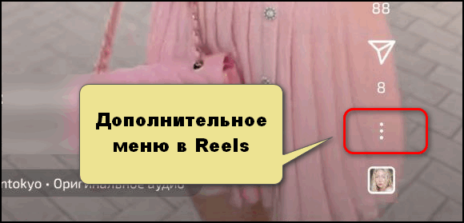
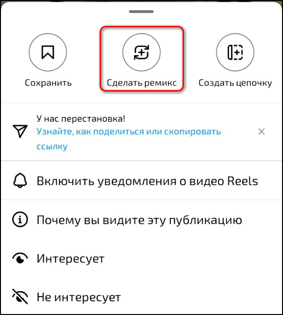
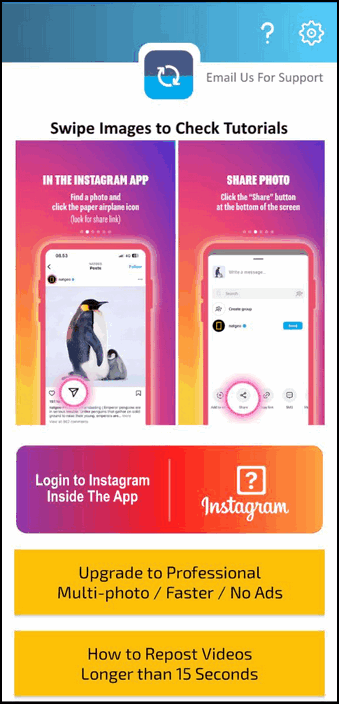
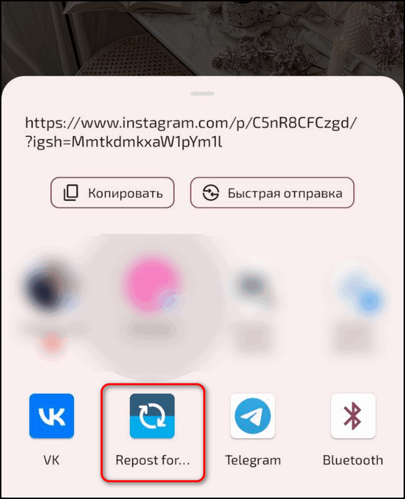

Репосты в Инстаграме: ТОП-5 способов сделать

В Инстаграме* сделать репост стало проще, после внесения изменений в последние версии. Теперь не нужно делать скриншот, чтобы продемонстрировать подписчикам понравившуюся публикацию: достаточно нажать по кнопке: «Отправить» и выбрать: «Моя История».
Что такое репост и зачем нужен
Репост – это возможность поделиться чужой публикацией или напомнить о некогда опубликованной своей. Добавить такую запись можно несколькими способами:
- кнопка поделиться под публикацией. Отправить в Истории, в личные сообщения друзьям;
- сделать скриншот и отправить в качестве изображения. Можно в Ленту или Сторис;
- совместная публикация. Новая функция, но возможна лишь с разрешения автора поста и максимум на 10 человек;
- сделать ремикс в Reels. Если нужно поделиться чужим клипом.
Делать репост в Инстаграме* не так сложно. К тому же, есть приложения для Android и iOS, направленные на получение чужих записей и создание репостов.
С помощью репостов делятся полезной и важной информацией, помогают в продвижении маленьким блогам и магазинам, оказывают внимание понравившейся странице (в качестве положительного или отрицательного отзыва). Или же напоминают подписчикам о каком-то важном событии, отправив в репост свою старую запись.
Репост в Сторис Инстаграма*
Проста и официальная функция доступна в Сторис. Пользователь может перенести в свои Истории чужую запись из Ленты, видео. В разделе со Сторис появится небольшое изображение с рамкой, краткое описание и кликабельная ссылка. Нажав по добавленной картинке пользователь сможет перейти на публикацию и посмотреть её полностью. Автор записи вправе запретить делится своими фото и видео, указав это в параметрах конфиденциальности при размещении записи. Как поделиться постом в Истории:
- Зайти в Инстаграм* - перейти к любой понравившейся записи.
- Нажать снизу по значку в виде самолетика – выбрать: «Отправить в Историю».

- Отрегулировать положение и размер – отправить.

Запись появится в недавно опубликованных, а зрители смогут перейти к оригинальной записи, поставить реакцию или оставить личный комментарий. На такие записи можно добавлять стикеры, другие ссылки, упоминать автора и загружать свои фотографии.
Варианты оформления Истории
Блогеры и пользователи, которые предпочитают эстетичный вариант ведения аккаунта, нередко оформляют Сторис с репостами дополнительными элементами. Так как демонстрационную картинку можно уменьшать, перемещать и даже скрывать за фото – это открывает новые варианты обработки.
Первый способ: сделать репост и выбрать квадратный вариант рамки для миниатюры. Далее перейти в стикеры и написать: «frame» (рамка), выбрать любой подходящий вариант и разместить сверху. Второй: добавить публикацию-репост и выбрать стикер «Добавить фото». Разместить поверх свое изображение и отправить. При нажатии на картинку будет ссылка на нужную запись. Третий: сделать из своей фотографии стикер, добавить в Историю публикацию-репост. Разместить свой снимок таким образом, чтобы тот указывал на нужную запись. Например: человек держит на блюдце публикацию.

Стикер проще создавать с помощью новой функции: «Вырезка». Нажав на свой или чужой пост нужно выбрать одноименную функцию и подождать, пока Инстаграм* создаст изображения. В дальнейшем, тот отобразится в разделе «Сторис».Новая функция Ремикс: как работает
Ремикс – функция, которая была добавлена в Reels и выполнена в виде: начало видео с оригинальном, а продолжение от другого автора. И создатель оригинала будет отмечен никнеймом на видео и в описании к публикации. Чтобы воспользоваться функцией, нужно выбрать запись, где в параметрах приватности открыто создание ремиксов. Порой авторы оригиналов запрещают любые ответы на свои видеоклипы, поэтому опция отсутствует при открытии дополнительного меню. Сделать ремикс в Инстаграме*:
- Зайти в Reels – найти интересное видео.
- Нажать три точки снизу – Сделать ремикс.

- Записать свой клип и отредактировать.

- Поделиться в Ленте.
Автор оригинала получит уведомление, что его запись была добавлена в чужое видео. В описании появится упоминание в виде «@никнейм».
Мобильные приложения
Репост записи на свою страницу возможен через приложения из Play Market и AppStore. Особенность таких утилит в том, что они скачивают пост и предлагают два варианта: поделиться без упоминания автора и без сохранения оригинального описания или же дополнить запись исходными данными. В список таких приложений входят:
- Regrann. Копирует все изображения и видео, которые были в карусели, добавляет оригинальное описание;
- Repost – Video Downloader. Скачивает видеоклипы из Сторис, Ленты и предлагает их опубликовать в социальную сеть;
- Репостер для Сторис и Видео. Предлагает отложенную публикацию, загрузку чужих фото и видео, работу с трендами и поиск записей.
Чтобы воспользоваться приложение Regrann, его нужно установить на телефон и авторизоваться в своем профиле. Как работает:
- Зайти в Regrann – подтвердить авторизацию.
- Перейти в Инстаграм* - выбрать нужную запись.

- Нажать по значку самолетика – указать «Поделиться».

- В списке приложений найти «Regrann» - подождать окончания загрузки.
- Выбрать вариант добавления публикации: в Историю, Ленту, скачать на смартфон или отложить размещение.
При отложенной публикации указывают время и дату, когда пост должен быть автоматически добавлен на страницу.
Скриншот фотографии
Сделать перепост или добавить запись наиболее простым способом возможно через скриншот. На разных моделях телефонов эта функция реализована: либо по нажатию тремя касаниями на экран, либо через зажатие клавиш блокировки и громкости. Нужно создать снимок и перейти к добавлению описания. В этом случае сохранить оригинальное описание не получится, но можно добавить своё и установить упоминание автора оригинала через «@никнейм». Тот же способ применим для размещения в Историях.
Поделиться публикацией с друзьями
Если размещать чужой в свою Ленту не хочется, то публикацию можно отправить друзьям в личные сообщения. Или же разместить для ограниченного круга лиц в Сторис, задать параметры конфиденциальности для записи. В Инстаграме* появилась новая функция: «Поделиться для аудитории», где можно выбрать кто именно увидит публикацию. Например, пользователи из перечня «Близких друзей». Как добавить только для друзей:
- Зайти в раздел: «Сторис» - добавить недавно созданный скриншот.
- Нажать снизу по значку «Только для близких» - указать пользователей, которые входят в перечень.
- Добавить запись.
То же касается и раздела с публикациями в Ленту: выбрать функцию «Аудитория» и указать только близких друзей. Посетители страницы и подписчики, которые не были добавлены в этот список посмотреть пост не смогут.
Обязательно ли отмечать автора в Инстаграме*
После того, как запись опубликована, в описании нужно отметить автора оригинала. Это связано с правилами социальной сети, которые запрещают использовать чужой контент без уведомления автора. Даже если этот человек дал устное согласие – его нужно упомянуть в описании. Это не касается Ремиксов и Сторис, куда был отправлен репост. Только в случаях, если пользователь создал скриншот или воспользовался дополнительными сервисами для скачивания чужих фото. Автор оригинала может оспорить упоминание в чужой публикации: удалив его с поста или написав об этом в комментариях. Но случается, что создатель оригинального поста сразу отправляет жалобу к администрации. И остается только удалить запись и дать обещание, что такая ситуация в дальнейшем не повторится.